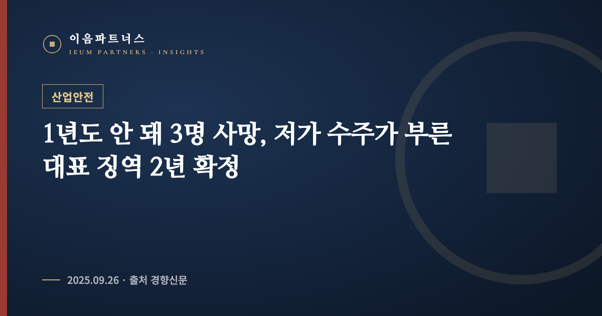

1년도 안 돼 3명 사망, 저가 수주가 부른 대표 징역 2년 확정

공사 기간은 짧고 단가는 낮은 일감을 받을 때, 안전 비용은 가장 먼저 줄이기 쉬운 항목입니다. 2025년 9월 26일 대법원은 1년이 채 안 되는 사이 노동자 3명이 숨진 조선업체 전 대표에게 징역 2년 실형을 확정했고, 법원은 사고의 출발점을 저가 수주로 봤습니다. 이 글에서는 사건 내용과 판결이 대표님께 주는 메시지를 정리합니다.
중대재해처벌법이 시행된 뒤 경영책임자가 대법원에서 실형을 확정받은 것은 이번이 두 번째입니다. 수주 단가와 공기(공사 기간)를 정하는 사람이 대표라면, 그 결정이 안전에 어떤 영향을 주는지까지 따져 볼 때입니다. 우리 회사 상황이 궁금하시다면 카카오톡 채널 이음파트너스로 편하게 물어 주세요.
어떤 사고였나
2022년 2월 19일 경남 고성의 한 조선소에서 50대 하청업체 직원이 선박 난간 보수 공사를 하다 떨어져 숨졌습니다. 이 사업장에서는 2021년 3월과 4월에도 협력업체 노동자가 작업 중 숨져, 1년도 안 되는 기간에 3명이 목숨을 잃었습니다(경향신문).
전 대표는 재판에서 피해자가 통제를 무시하고 작업 공간에 들어갔으며 자신은 안전 조치를 했다고 주장했습니다. 그러나 1·2심과 대법원 모두 이 주장을 받아들이지 않았습니다.
법원은 무엇을 문제 삼았나
1심은 회사가 짧은 기한 안에 선박 수리를 끝내려고 추락보호망 같은 보호 조치 비용을 고려하지 않은 채 저가로 수주해 수익을 냈고, 그 결과 사고가 났다고 봤습니다. 2심은 “중대재해처벌법 제정 이유는 사고를 사전에 방지하기 위한 것”인데도 단기간에 사고가 계속됐다며, 형량은 회사의 조직 문화와 안전관리 시스템에 영향을 줄 정도여야 한다고 판단했습니다(경향신문).
| 구분 | 내용 |
|---|---|
| 원청 전 대표 | 징역 2년 실형 확정(2025년 9월 26일) |
| 원청 법인 | 벌금 20억 원 확정 |
| 조선소장 등 원청 직원 | 징역형 또는 금고형(노역 없이 갇히는 형벌)의 집행유예 |
| 하청 현장소장 | 징역 10개월, 집행유예 2년(1심에서 확정) |
| 하청 대표·하청 법인 | 각각 벌금 2천만 원(1심에서 확정) |
대표 한 사람만이 아니라 법인, 현장 책임자, 하청 대표까지 함께 처벌받았습니다. 특히 법인 벌금 20억 원은 고용노동부가 공표한 형 확정 사례 가운데 지금까지 가장 큰 금액입니다(경향신문). 사고 한 번이 사람과 회사 재무에 동시에 부담이 된다는 뜻입니다.
첫 번째 확정 사례와 무엇이 같았나
앞서 첫 실형 확정은 2023년 12월이었습니다. 2022년 3월 경남 함안의 한 제강 공장에서 60대 작업자가 1.2톤 무게의 방열판에 깔려 숨진 사고로, 원청 대표가 징역 1년을 확정받았습니다. 두 사건 모두 하청 노동자가 원청 사업장에서 숨진 사고였습니다.
대표님이 지금 확인할 것
- 견적과 수주 단계에서 추락 방지망 같은 안전 비용을 따로 넣고 있는지
- 공기가 짧은 일감일수록 안전 인력과 장비가 줄어들지 않는지
- 한 번 사고가 난 작업은 원인을 찾아 고친 기록이 남아 있는지
참고한 자료
- 1년도 안 돼 3명 사망···삼OOO씨 전 대표 ‘중대재해법 위반’ 실형 확정 2호 — 경향신문 (2025.09.26)
- 작년 하반기 중대재해사업장 22곳…경영책임자 실형 1명 — 경향신문 (2026.03.31)
수주 단가와 안전 비용 사이에서 고민이시라면 카카오톡 채널 이음파트너스에서 함께 정리해 보실 수 있습니다.
※ 이 글은 일반적인 정보 제공을 위한 것으로, 개별 사안은 세무사·노무사 등 전문가와 함께 확인하시기 바랍니다.